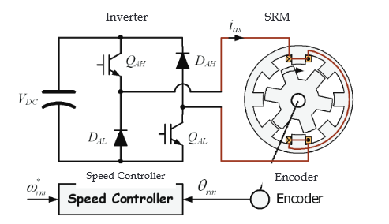
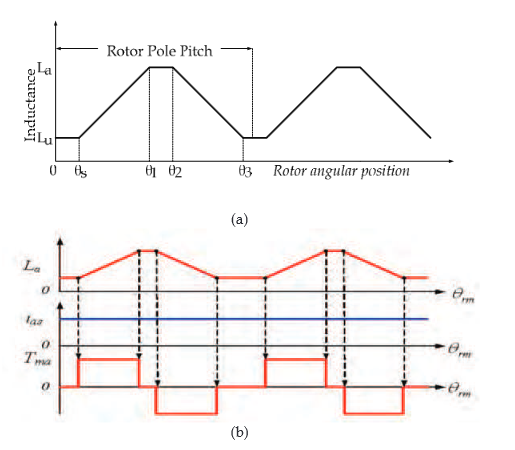
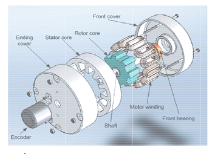
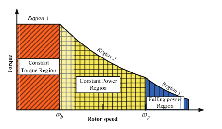
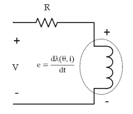
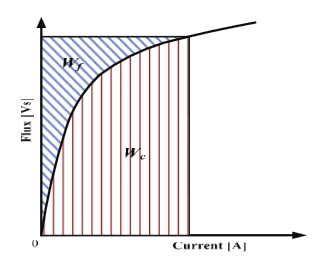
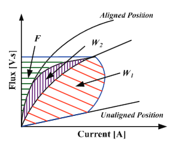

Switched Reluctance Motor
1. Introduction
Switched Reluctance Motors (SRM) have inherent advantages such as simple structure with non winding construction in rotor side, fail safe because of its characteristic which has a high tolerances, robustness, low cost with no permanent magnet in the structure, and possible operation in high temperatures or in intense temperature variations. The torque production in switched reluctance motor comes from the tendency of the rotor poles to align with the excited stator poles. The operation principle is based on the difference in magnetic reluctance for magnetic field lines between aligned and unaligned rotor position when a stator coil is excited, the rotor experiences a force which will pull the rotor to the aligned position. However, because SRM construction with doubly salient poles and its non-linear magnetic characteristics, the problems of acoustic noise and torque ripple are more severe than these of other traditional motors. The torque ripple is an inherent drawback of switched reluctance motor drives. The causes of the torque ripple include the geometric structure including doubly salient motor, excitation windings concentrated around the stator poles and the working modes which are necessity of magnetic saturation in order to maximize the torque per mass ratio and pulsed magnetic field obtained by feeding successively the different stator windings. The phase current commutation is the main cause of the torque ripple.
The torque ripple can be minimized through magnetic circuit design in a motor design stage or by using torque control techniques. In contrast to rotating field machines, torque control of switched reluctance machines is not based on model reference control theory, such as field- oriented control, but is achieved by setting control variables according to calculated or measured functions. By controlling the torque of the SRM, low torque ripple, noise reduction or even increasing of the efficiency can be achieved. There are many different types of control strategy from simple methods to complicated methods. In this book, motor design factors are not considered and detailed characteristics of each control method are introduced in order to give the advanced knowledge about torque control method in SRM drive.
1.1 Characteristic of Switched Reluctance Motor
The SRM is an electric machine that converts the reluctance torque into mechanical power. In the SRM, both the stator and rotor have a structure of salient-pole, which contributes to produce a high output torque. The torque is produced by the alignment tendency of poles. The rotor will shift to a position where reluctance is to be minimized and thus the inductance of the excited winding is maximized. The SRM has a doubly salient structure, but there are no windings or permanent magnets on the rotor [Lawrenson, 1980]. The rotor is basically a piece of steel (and laminations) shaped to form salient poles. So it is the only motor type with salient poles in both the rotor and stator. As a result of its inherent simplicity, the SRM promises a reliable and a low-cost variable-speed drive and will undoubtedly take the place of many drives now using the cage induction, PM and DC machines in the short future. The number of poles on the SRM’s stator is usually unequal to the number of the rotor to avoid the possibility of the rotor being in a state where it cannot produce initial torque, which occurs when all the rotor poles are aligned with the stator poles. Fig.1 shows a 8/6 SRM with one phase asymmetric inverter. This 4-phase SRM has 8 stator and 6 rotor poles, each phase comprises two coils wound on opposite poles and connected in series or parallel consisting of a number of electrically separated circuit or phases. These phase windings can be excited separately or together depending on the control scheme or converter. Due to the simple motor construction, an SRM requires a simple converter and it is simple to control.
The aligned position of a phase is defined to be the situation when the stator and rotor polesof the phase are perfectly aligned with each other (θ1 - θ2), attaining the minimumreluctance position and at this position phase inductance is maximum (La). The phaseinductance decreases gradually as the rotor poles move away from the aligned position ineither direction. When the rotor poles are symmetrically misaligned with the stator poles ofa phase (θ3 - θs), the position is said to be the unaligned position and at this position thephase has minimum inductance (Lu). Although the concept of inductance is not valid for ahighly saturated machine like SR motor, the unsaturated aligned and unaligned incrementalinductances are the two key reference positions for the controller. The relationship betweeninductance and torque production according to rotor position is shown in Fig. 2.There are some advantages of an SRM compared with the other motor type. The SRM has alow rotor inertia and high torque/inertia ratio; the winding losses only appear in the statorbecause there is no winding in the rotor side; SRM has rigid structure and absence ofpermanent magnets and rotor windings; SRM can be used in extremely high speedapplication and the maximum permissible rotor temperature is high, since there are nopermanent magnets and rotor windings [Miller, 1988].
Constructions of SRM with no magnets or windings on the rotor also bring some disadvantage in SRM. Since there is only a single excitation source and because of magnetic saturation, the power density of reluctance motor is lower than PM motor. The construction of SRM is shown in Fig. 3. The dependence on magnetic saturation for torque production, coupled with the effects of fringing fields, and the classical fundamental square wave excitation result in nonlinear control characteristics for the reluctance motor. The double saliency construction and the discrete nature of torque production by the independent phases lead to higher torque ripple compared with other machines. The higher torque ripple, and the need to recover some energy from the magnetic flux, also cause the ripple current in the DC supply to be quite large, necessitating a large filter capacitor. The doubly salient structure of the SRM also causes higher acoustic noise compared with other machines. The main source of acoustic noise is the radial magnetic force induced. So higher torque ripple and acoustic noise are the most critical disadvantages of the SRM. The absence of permanent magnets imposes the burden of excitation on the stator windings and converter, which increases the converter kVA requirement. Compared with PM brushless machines, the per unit stator copper losses will be higher, reducing the efficiency and torque per ampere. However, the maximum speed at constant power is not limited by the fixed magnet flux as in the PM machine, and, hence, an extended constant power region of operation is possible in SRM.
The torque-speed characteristics of an SRM are shown in Fig. 4. Based on different speed ranges, the motor torque generation has been divided into three different regions: constant torque, constant power and falling power region.
 The base speed ωb is the maximum speed at which maximum current and rated torque can be achieved at rated voltage. Below ωb, the torque can be maintained constant or control the iat-tcp phase current. At lower speed, the phase current rises almost instantly after the phase switches turn-on since the back EMF is small at this time. So it can be set at any desired level by means of regulators (hysteresis or PWM controller). Therefore, the adjustment of firing angle and phase current can reduce noise and improve torque ripple or efficiency.
With speed increase, the back-EMF is increased. An advance turn-on angle is necessary to reach the desired current level before rotor and stator poles start to overlap. The desired current level depends on the speed and the load condition. At the same time, since no current chopping appears during the dwell angle, only the angle control can be used at this stage. So the torque cannot be kept constant and is falling linearly with the speed increase, resulting in a constant power production. In the falling power region, as the speed increases, the turn-on angle cannot be advanced further. Because torque falls off more rapidly, the constant power cannot be maintained. As the speed grows, the tail current of the phase winding extends to the negative torque region.
In the falling power region, as the speed increases, the turn-on angle cannot be advanced further. Because torque falls off more rapidly, the constant power cannot be maintained. As the speed grows, the tail current of the phase winding extends to the negative torque region.The tail current may not even drop to zero. In the high speed operation, the continued conduction of current in the phase winding can increase magnitude of phase current and the power density can be increased.
1.2 Equivalent circuit of Switched Reluctance Motor
The equivalent circuit for SRM can be consisting of resistance and inductance with some condition. The effects of magnetic saturation, fringing flux around the pole corners, leakage flux, and the mutual coupling of phases are not considered. The linear analytical model of the SRM can be described by three differential equations, which can be classified as the voltage equation, the motional equation and the electromagnetic torque equation. The voltage equation is:
V = R * I + dX(R * I) / dt
An equivalent circuit of the SRM is shown in Fig. 5. Where V is the applied phase voltage to phase, R is the phase resistance, and e is back-EMF. Ordinarily, e is the function of phase current and rotor position, and λ can be expressed as the product of inductance and winding current:
λ(θ - i) = L(θ, i) . i
And from (1) and (2), the function can be rewritten as:
V = Ṙ i + dλ(θi)⁄di + dω(θi)⁄dθ + dB⁄dt
For the electromechanical energy conversion, a nonlinear analysis takes account of the saturation of the magnetic circuit. Generally, the stored magnetic energy is defined as Wf and the co-energy is defined as Wc :
Wf = ∫ fdψ
We = ∫ ψ di
The relationship between energy (Wf) and co-energy (Wc) as a function of flux and current shows in Fig. 6. When rotor position matches the turn-on position, the phase switches are turned on; the phase voltage starts to build up phase current. At this time, one part of the input energy will be stored in magnetic field. With the increasing inductance, the magnetic field energy will increase until turn-off angle. The other parts of input energy will be converted to mechanical work and loss. In Fig. 7, the flux of the SR motor operation is not a constant; nevertheless, uniform variation of the flux is the key point to obtain smoothing torque. W1 is the mechanical work produced during the magnetization process, in other words, W1 is co- energy in energy conversion. F+W2 is magnetic field energy between turn-on and turn-off. During the derivation of the energy curve and the energy balance, constant supply voltage Vs and rotor speed ω are assumed.
When rotor position matches the turn-off position, phase switches are turned off. So the power source will stop to input energy. But magnetic field energy is F+W2 at that moment. The magnetic field energy needs to be released, and then the phase current starts to feedback energy to power source. At this time, some of magnetic field energy, which is W2, is converted into mechanical work and loss. The surplus of field energy F is feedback to the power source.
The analytical answer of the current can be obtained from (3). The electromagnetic torque equation is:
Tg = ∂W⁄∂θ = ∂Wr(θ+Δθ)−∂Wr(θ)⁄Δθ
From (6), an analytical solution for the torque can be obtained. W' is the co-energy, which can be expressed as:
W' = ∫0Lλ di
And the motion equation is:
Tg = ∫∂W⁄∂t + Dω + TL
ω = dW⁄dt
Where TL, Te, J, ω and D are load the electromagnetic torque, the rotor speed, the rotor inertia and the friction coefficient respectively.
The equations which have been mentioned above, can be combined together to build the simulation model for a SRM system. However, the function of inductance needs to be obtained by using a finite element method or by doing experiments with a prototype motor.

Buy full version to unlock all the content & features